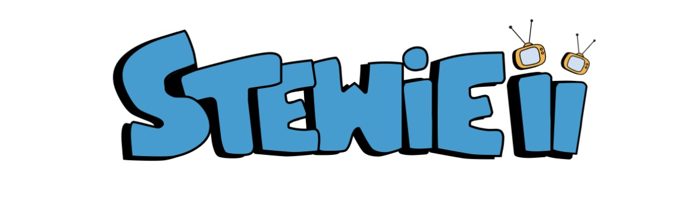

Articles
Articles
Music
What Makes Baduizm a Gem of a Tape
A young and talented Erykah Badu in 1997 blessed her generation and generations to come with a masterpiece of an album.
By Kenny Stewie / 2025-09-15
Ad